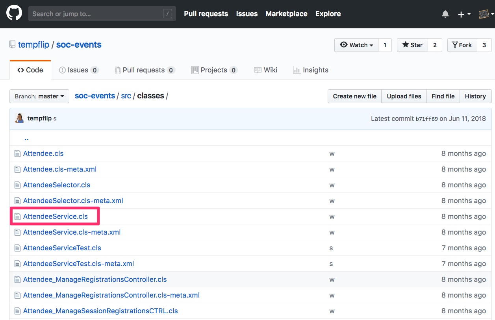

Embracing Service Oriented Patterns in Apex
Don Robins
What's my goal?
To open your eyes
...and to expose and encourage you to explore:
Adopting software development patterns
by layering your codebase
and decoupling complexity in your org
What's NOT my goal?
To brainwash you
...and to convince you to:
Migrate to a complex architectural framework
requiring you to refactor your entire codebase
and maxing out the Apex code limit in your org
Let's identify the problem...
MONGO
MONGO
hu-MONGO-us
MONGO == BAD
Mongo ~ Mondo
mondo-mania
noun
the preponderance of
oodles and oodles of content
in any one programmatic construct.
Mondo-mania
(like Mongo)
is BAD!
In Salesforce mondo-mania is found in:
In Salesforce mondo-mania is found in:
What are mondo-mania smells?
What are mondo-mania smells?
Let's look at an example...
A Real Mondo Method
What is the solution?
SOC
Separation of Concerns
What is
Separation of Concerns?
separation of concerns
noun
a design principal of breaking down code
into distinct sections, each addressing a concern.
separation of concerns
noun
a design principal of breaking down code
into distinct sections, each addressing a concern.
SOC
is a collection of
software design patterns
(it is NOT a framework)
software design pattern
noun
a reusable solution to a
common problem in software design.
software design pattern
noun
a reusable solution to a
common problem in software design.
software framework
noun
a collection of reusable code
that implements a solution to a
common problem in software design.
The fflib Apex Common Framework
Apply a pattern to solve mondo-mania:
Apply a pattern to solve mondo-mania:

What does it look like?
The fflib Apex Common Framework
The AttendeeService Apex Class
Service Method Called From a Component Controller
@AuraEnabled
public static Attendee saveAttendee(String attendeeJSON) {
Attendee att = AttendeeService.saveAttendee(attendeeJSON);
return getAttendee(att.recordId);
}
Service Method Called From a Visualforce Controller
public PageReference saveRegistrations() {
AttendeeService.saveAttendee(this.attendee);
PageReference pr = new PageReference('/' + this.attendee.recordId);
pr.setRedirect(true);
return pr;
}
Service Method Called From a Trigger
trigger SessionRegistration on Session_Registration__c (before insert) {
AttendeeService.validateSessionRegistration(trigger.new);
}
What are Service Layer benefits?
When is a Service Layer worth it?
What are Service Layer guidelines?
Can services help with integration?

Slide Backgrounds
Set data-background="#dddddd" on a slide to change the background color. All CSS color formats are supported.
Image Backgrounds
<section data-background="image.png">Tiled Backgrounds
<section data-background="image.png" data-background-repeat="repeat" data-background-size="100px">Video Backgrounds
<section data-background-video="video.mp4,video.webm">... and GIFs!
Pretty Code
function linkify( selector ) {
if( supports3DTransforms ) {
var nodes = document.querySelectorAll( selector );
for( var i = 0, len = nodes.length; i < len; i++ ) {
var node = nodes[i];
if( !node.className ) {
node.className += ' roll';
}
}
}
}
Code syntax highlighting courtesy of highlight.js.
Marvelous List
- No order here
- Or here
- Or here
- Or here
Fantastic Ordered List
- One is smaller than...
- Two is smaller than...
- Three!
Tabular Tables
| Item | Value | Quantity |
|---|---|---|
| Apples | $1 | 7 |
| Lemonade | $2 | 18 |
| Bread | $3 | 2 |
Clever Quotes
These guys come in two forms, inline: The nice thing about standards is that there are so many to choose from
and block:
“For years there has been a theory that millions of monkeys typing at random on millions of typewriters would reproduce the entire works of Shakespeare. The Internet has proven this theory to be untrue.”
Intergalactic Interconnections
You can link between slides internally, like this.
Speaker View
There's a speaker view. It includes a timer, preview of the upcoming slide as well as your speaker notes.
Press the S key to try it out.
Export to PDF
Presentations can be exported to PDF, here's an example:
Global State
Set data-state="something" on a slide and "something"
will be added as a class to the document element when the slide is open. This lets you
apply broader style changes, like switching the page background.
State Events
Additionally custom events can be triggered on a per slide basis by binding to the data-state name.
Reveal.addEventListener( 'customevent', function() {
console.log( '"customevent" has fired' );
} );
Take a Moment
Press B or . on your keyboard to pause the presentation. This is helpful when you're on stage and want to take distracting slides off the screen.
Much more
- Right-to-left support
- Extensive JavaScript API
- Auto-progression
- Parallax backgrounds
- Custom keyboard bindings